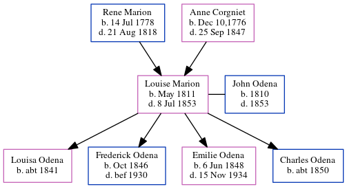

Louise Marie Odena (née Marion) 1811 - 1853
[ Home ] | [ Calendar ] | [ Surnames Index ] | [ Census Index ] | [ Family History ]The child of Rene Marion (a baker) and Anne Corgniet (a tailoress), Louise Marion, the 3 times great-grandmother of Michele Copp (née Phillips), was born in Nantes, Bretagne, Loire-Atlantique, Pays de la Loire, France in May 18111,2,3,4 and married John Odena (with whom she had 4 children: Louisa Marion, Frederick Marion, Emilie Mae and Charles T) in Feb 20, 1841. In 1850, she was living in St Michael and St Phillip, Charleston, South Carolina1.
She died on Jul 8, 1853 in Charleston4 (my father's Aunt Maria told her nephew Dennis that she died of a broken heart because her husband was late returning from a trip to Charleston) and was buried in Atlanta, Fulton County, Georgia, USA after Jul 8, 18534.
Parents
- Rene Yves was born on Jul 14, 1778
- Anne Marie was born in Dec 10,1776
Children
- Louisa Marion was born c. 1841
- Frederick Marion was born in Oct 1846
- Emilie Mae was born on Jun 6, 1848
- Charles T was born c. 1850
Citations
- 1850 United States Federal Census Online publication - Provo, UT, USA: The Generations Network, Inc., 2005.Original data - United States of America, Bureau of the Census. Seventh Census of the United States, 1850. Washington, D.C.: National Archives and Records Administration, 1850. M432,
- Geneanet Community Trees Index Ancestry.com Operations, Inc. (Geneanet Community Trees Index. Paris, France: Geneanet.)
- Michigan, Death Records, 1867-1950 Ancestry.com Operations, Inc.
- U.S., Find A Grave Index, 1600s-Current Ancestry.com Operations, Inc.
Family Tree
Generated by ged2site. Last updated on Jun 6, 2024